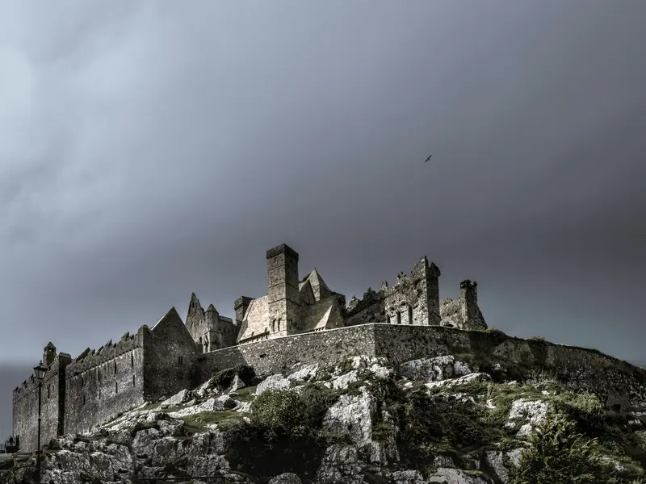

Ancient East
Enjoy a 3-day trip around the most impressive ancient towns and landmarks of Ireland's Ancient East.
Places/Attractions:
- Hill of Tara
- Clonmacnoise
- Rock of Cashel
- Kilkenny Castle
- Hook Head Lighthouse
Enjoy a 3-day trip around the most impressive ancient towns and landmarks of Ireland's Ancient East.
A 4-day tour where we will take you through the most interesting towns and villages of Cork and Kerry counties.
In this 10-day tour, we will be riding to the most breathtaking locations along the spectacular west and south coast of Ireland.